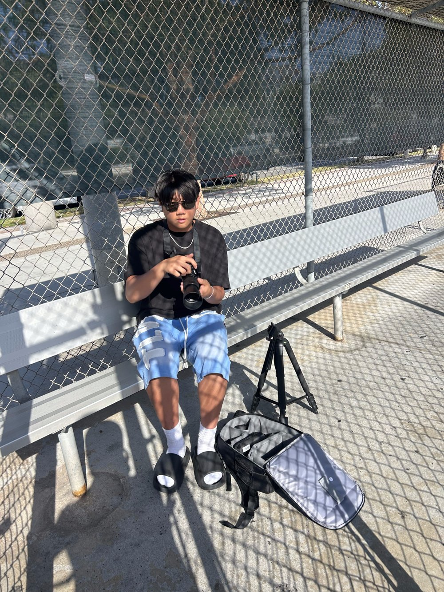

I'm a teen photographer based in Carlsbad, CA — and when I'm not behind the camera, I'm usually on the field. Baseball has been a huge part of my life for as long as I can remember, and it's actually what got me into photography in the first place. I started out shooting my own games and teammates, and fell in love with freezing those split-second moments: the swing, the slide, the celebration at home plate.
That same love for the game shapes how I shoot everything now, whether it's sports, events, or portraits. I'm always watching for the real moment — the genuine reaction, not the posed one — and I bring the same focus and hustle I learned playing ball to every shoot I take on.
Every shoot is different, and I tailor my approach to fit the people and the occasion. My goal is always the same: honest photos you'll want to look at for years to come.
Interested in working together? Get in touch.